Школа в Минабе: что мы знаем и чего не знаем
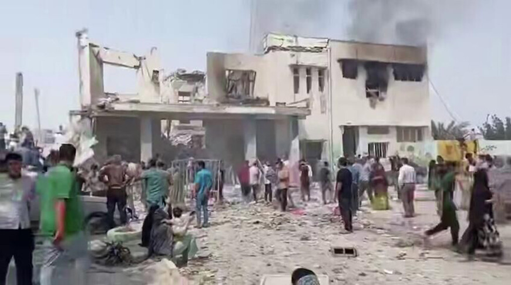
Речь о школе для девочек в городе Минаб на юге Ирана, в 22 км от Ормузского пролива. Вокруг неё сейчас разворачивается один из главных информационных сюжетов войны и массовый подрыв пердаков в интернете.
Дисклеймер. Гибель детей — это всегда плохо. Дети уж точно ни в чём не виноваты. Ни в Иране, ни в России, ни в Израиле. Но они не виноваты и в том, что иранский режим два десятка лет работал над производством ядерного оружия, открыто обещая уничтожить «сионистское образование». Израиль — маленькая страна. Страна одного ядерного взрыва.

Что произошло и кто нанёс удар
Удар был нанесён 28 февраля, в первые полчаса с начала операции. Официальная цель — военный комплекс Саид аш-Шухада, штаб ракетной Бригады Асеф ВМС КСИР — одного из главных ударных подразделений Корпуса стражей исламской революции, контролирующего Ормузский пролив.
По данным расследования Reuters от 6 марта, американские военные следователи склоняются к выводу, что удар вероятно нанесли силы США — по военному объекту КСИР. Ни США, ни Израиль официально ответственность не признали.
Министр обороны Хегсет:
«We're investigating that. We, of course, never target civilian targets»
«Мы расследуем это. Мы, разумеется, никогда не наносим ударов по гражданским объектам»
Госсекретарь Рубио:
«The Department of War would be investigating if that was our strike»
«Министерство обороны расследует, был ли это наш удар»
Пресс-секретарь Белого дома Каролин Ливитт:
«The Iranian regime targets civilians and children — not the United States of America»
«Иранский режим нацелен на гражданских и детей — не Соединённые Штаты Америки»
Представитель ЦАХАЛ заявил, что Израилю неизвестно ни об одном израильском ударе в районе Минаба.
По данным источников, США и Израиль разделили зоны ответственности: Израиль работал по ракетным объектам на западе Ирана, США — по морским и ракетным целям на юге. (Reuters / Times of Israel)
Иранские власти заявляют о 165–180 погибших, большинство — девочки 7–12 лет. Независимого подтверждения точных цифр нет. (CBS News, NBC News)
Иран и прозрачность: нулевой допуск
Фейк №1: «Авианосец в огне». КСИР заявил, что поразил USS Abraham Lincoln баллистическими ракетами. В соцсетях мгновенно появились два видео: ИИ-сгенерированный ролик с горящим авианосцем (неправильная маркировка палубы, нереалистичные детали) и клип из видеоигры Arma 3, перевыложенный с новыми подписями. Видео набрали миллионы просмотров — в том числе 10+ миллионов в китайских соцсетях. Командование Центральных сил США (CENTCOM) ответило прямо:
«Iran's IRGC claims to have struck USS Abraham Lincoln with ballistic missiles. LIE. The Lincoln was not hit. The missiles launched didn't even come close»
«КСИР Ирана заявляет, что поразил USS Abraham Lincoln баллистическими ракетами. ЛОЖЬ. Lincoln не был поражён. Выпущенные ракеты даже близко не долетели»
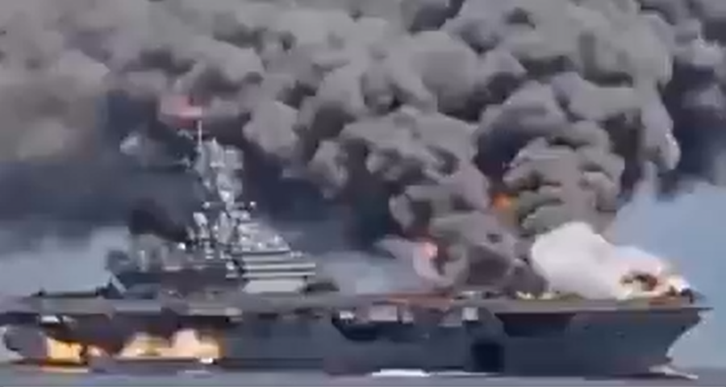
Ключевой вопрос, который почти никто не задаёт: почему мы должны верить иранской пропаганде на слово?
Исламская Республика Иран не допустила независимого расследования ни одного инцидента с гражданскими жертвами за всю свою историю:
- Протесты 2025–2026 — тотальный блэкаут интернета, от 7 000 (HRANA) до 36 500 (утечки КСИР) убитых, ни одного независимого расследования
- Рейс PS752 — бульдозеры на месте крушения до прибытия следователей, чёрные ящики удерживались полтора года
- Протесты «Женщина, жизнь, свобода» (2022) — ни один независимый наблюдатель не допущен, тела погибших конфискованы у семей
- Протесты ноября 2019 — интернет отключён на неделю по всей стране, число убитых установлено только по утечкам (Reuters: около 1500)
- Массовые казни 1988 года — Иран отрицал сам факт десятилетиями; число жертв (до 5000 политзаключённых) установлено по свидетельствам выживших и аудиозаписи аятоллы Монтазери
Алгоритм всегда один: отрицать → обвинять внешнего врага → блокировать доступ к месту → признавать только под давлением неопровержимых доказательств. Рейс PS752 — эталонный пример: три дня лжи, бульдозеры на обломках, признание только после видеозаписи пуска ракеты.
В случае Минаба — ситуация не лучше. Ни один независимый следователь не получил физического доступа к месту. Международных наблюдателей нет. Спутниковые снимки Planet Labs были опубликованы через BBC Verify только 5 марта — через пять дней после удара; до этого момента бульдозеры уже работали на месте. Иранские СМИ опубликовали рукописный список 56 имён — BBC Verify смогла верифицировать лишь три. Основной источник цифр — иранские государственные структуры; независимая организация HRANA документирует жертвы отдельно, но физического доступа к месту не имеет.
Где находится школа — и что это за школа
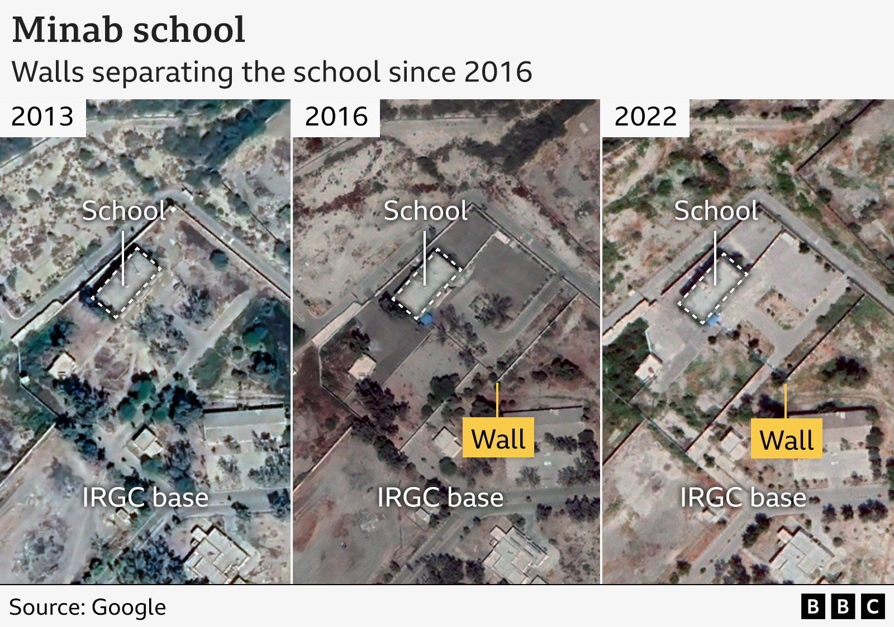
Начнём с детали, которую большинство СМИ предпочло не замечать. Полное официальное название объекта — «Shajareh Tayyebeh IRGC Navy Girls' School» — школа девочек ВМС КСИР. Не «школа рядом с военной базой». Школа, принадлежащая Корпусу стражей исламской революции. По данным антирежимных иранских СМИ — школа для детей военнослужащих, построенная непосредственно при базе.
Геолокационный анализ, проведённый независимыми исследователями, установил: школа располагалась в пределах того же огороженного периметра, что и комплекс Саид аш-Шухада — штаб Бригады Асеф. По данным спутниковых снимков, до 2016 года здание находилось непосредственно внутри военной базы; в сентябре 2016 года его отделили дополнительным забором. (Wikipedia, геолокация / Ashkan Khatibi)
Сама школа стоит вплотную к периметру базы — до 2016 она вообще была внутри этого периметра, потом её отделили стеной. 600 метров (про которые сейчас все пишут, мол далеко) — это расстояние от школы до штаба Бригады Асеф (Sayyid al-Shuhada), т.е. до конкретного военного объекта внутри базы. Сама база — порядка 500–700 метров в длину, это крупный комплекс с 8–10+ зданиями (штаб, клиника, аптека, культурный комплекс и т.д.). По сути школа является частью комплекса военных объектов.
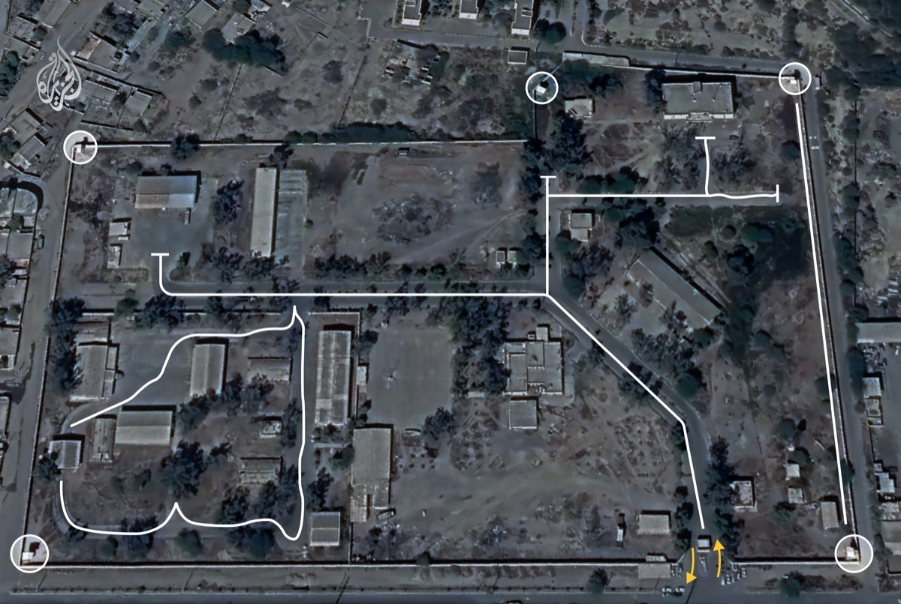
CNN и New York Times также подтвердили: здание было бывшим военным объектом, переоборудованным в школу, и исторически входило в состав базы КСИР.
На Google Maps картина показательная: вокруг — плотная жилая застройка. Школа стоит в углу обширного прямоугольного участка с большими открытыми площадями — характерная территория военной базы. Ну и видно, что школа отделена от жилой застройки и стоит вплотную к военной базе.

По строгим канонам ислама, девочки не должны общаться с посторонними мужчинами. Собственно, поэтому школа именно для девочек, мальчиков там нет. Разместить школу для девочек вплотную к военной базе, где находятся сотни военнослужащих, — по исламским же понятиям идея нетривиальная. Но Корпусу стражей исламской революции никто не указ, так что, наверное норм.
Ещё раз: до 2016 года школа находилась буквально внутри периметра базы КСИР — единый забор, единый комплекс. В 2016 её отделили стеной, но здание осталось вплотную к военным объектам. CBC прямо пишет: школа «was once part of» («была частью») базы КСИР. То есть формально к моменту удара школа уже не «на территории» базы — но исторически она была её частью, и стоит в 600 метрах от штаба ракетной бригады.
Важный юридический контекст: по Статье 52 Дополнительного протокола I к Женевским конвенциям, гражданские объекты, используемые в военных целях, утрачивают защищённый статус. А по Статье 58 — сторона конфликта обязана избегать размещения военных объектов вблизи гражданского населения. Школа, принадлежащая КСИР и расположенная вплотную к штабу ракетной бригады, — это именно тот случай. Ответственность за размещение детей в зоне поражения лежит в первую очередь на том, кто их туда поместил.
КСИР в школах: документально подтверждённая практика
Использование гражданской инфраструктуры иранскими силовыми структурами — не гипотеза. Это задокументированная системная практика, действующая с 1980-х годов.
Басидж — ополченческое крыло КСИР — управляет организационной сетью от 40 000 до 54 000 баз (пайгях), значительная часть которых размещена непосредственно в школьных зданиях по всему Ирану. Это не импровизация военного времени. Это формализованная структура, выстроенная десятилетиями. Программы вербовки детей — «Омидан» (мальчики), «Пуяндеган» (девочки), «Пишгаман» (подростки) — работают при школах, вовлекая учеников в идеологическую и военизированную подготовку с раннего возраста. Школа и военная инфраструктура КСИР — не два отдельных мира. Они сращены конструктивно.
Январь 2026 года — за месяц до начала войны. Иранские граждане распространяли в соцсетях предупреждения: не отправляйте детей в школы — режим превращает их в базы Басидж. (RightWingHeadlines)
Профсоюз учителей Ирана официально предупреждал о нарастающем присутствии силовых структур в школах: бойцы Басидж, религиозные эмиссары, сотрудники в штатском — под различными предлогами входили в здания школ по всей стране. (IranWire)
В ходе боевых действий зафиксированы видеозаписи: подразделения КСИР и Басидж действуют из школьных зданий в Тегеране и Ширазе.
3 марта IranIntl зафиксировал ещё один показательный факт: Иран провёл официальную пресс-конференцию прямо в здании школы — демонстративное использование гражданского объекта в информационных целях. (IranIntl)
Иран здесь не уникален — он экспортировал эту тактику. ХАМАС в Газе перенял ту же доктрину: в 2014 году агентство ООН по помощи палестинским беженцам (БАПОР / UNRWA) трижды обнаруживало ракеты, спрятанные в своих школах. Три отдельных случая в ходе одной операции. UNRWA официально осудил использование своих объектов и потребовал объяснений. «Хезболла» в Ливане действовала по той же модели, размещая пусковые установки в жилых кварталах и учебных заведениях. Всё это — одна школа, в буквальном смысле: школа КСИР, экспортированная ученикам. (Times of Israel)
Это не случайная деталь. По международному гуманитарному праву, школы и больницы лишаются защищённого статуса, как только начинают использоваться в военных целях. Режим это знает — и именно поэтому сознательно размещает военную инфраструктуру в гражданских объектах: чтобы при ударе мир видел школу, а не ракетную базу.
А теперь — контекст, в котором всё это произошло. Переговоры завершились 26 февраля в Женеве. Иранская делегация на первой встрече с гордостью сообщила: накоплен обогащённый уран на 11 бомб, и все инспекции МАГАТЭ не смогли это предотвратить. На последней встрече американцы предложили компромисс — мораторий на ядерную программу сроком на 10 лет, без демонтажа, только под контролем МАГАТЭ. Иран отказал. Через два дня начались бомбардировки — при двух авианосных группировках в регионе. В такой ситуации проводить занятия в школе, стоящей вплотную к штабу ракетной бригады КСИР, — это либо преступная халатность, либо намеренное решение.
Что происходило на месте
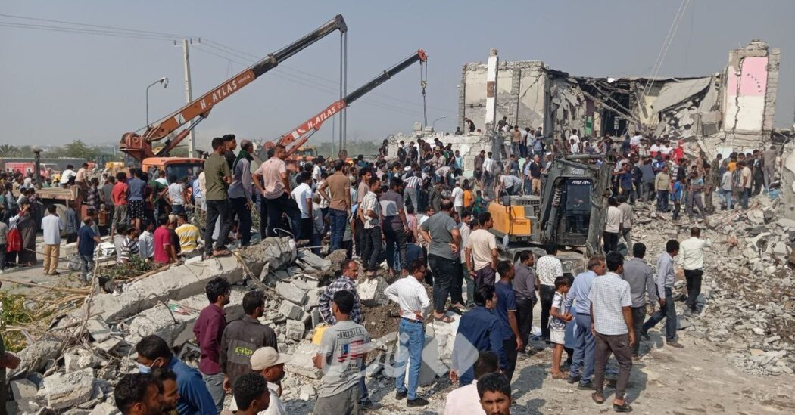
Есть фотографии разрушенного здания, часть верифицирована независимыми источниками. Здание небольшое, разрушено. Вокруг открытая местность, много битого кирпича.
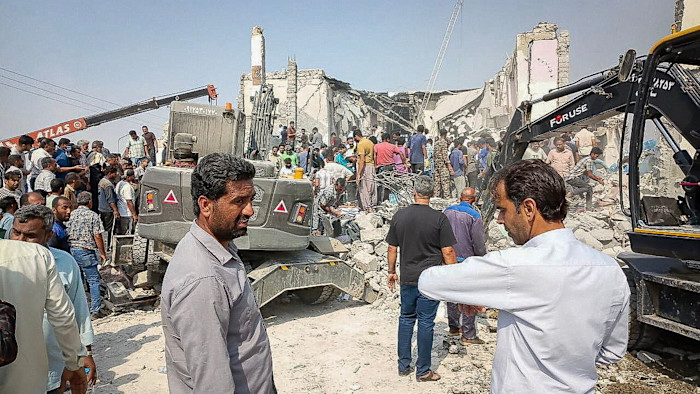
Смотрим внимательно на то, что происходит вокруг. Большое количество людей — почти исключительно мужчин, без профессиональной экипировки. Уже работает тяжёлая строительная техника: бульдозер, экскаватор, подъёмные краны. Съёмка сделана явно не в первые минуты после удара.
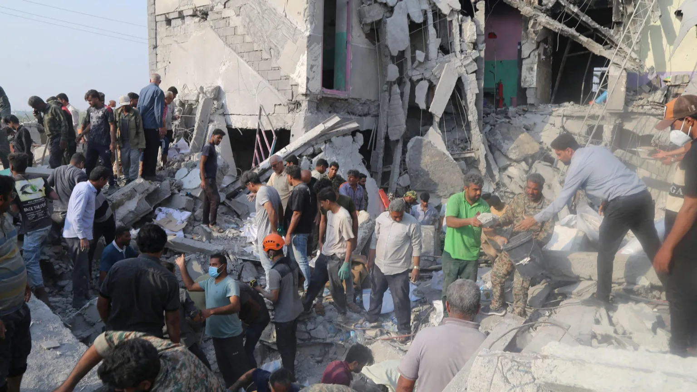
При этом на ранних видеозаписях: нет ни одной машины скорой помощи, нет ни одного врача, нет ни одной сцены оказания медицинской помощи. Важный технический момент: если под развалами есть живые люди, их не разгребают экскаватором. Спасательную операцию ведут руками, с осторожностью, со специальным оборудованием.
Французская Le Monde отметила это прямо: «несмотря на большое количество жертв, видеозаписей с ними пока мало». Я провёл исследование с помощью Claude и Perplexity, не смог найти ни одной фотографии с медицинской эвакуацией или оказанием первой помощи. Проверено ~60 изображений из Wikimedia Commons (18 файлов — руины, завалы, спасатели руками, тела), Getty Images (42 фото — руины, похороны, тела), Wikipedia, Al Jazeera, Reuters — ничего. Единственное текстовое упоминание скорых — в Wikipedia со ссылкой на NYT: «injured victims taken away in ambulances» («раненых увозили на скорых»), но ни одной фотографии, подтверждающей это, в открытом доступе нет. CNN и Guardian публикуют как верифицированные — только толпу и разрушенное здание. (HonestReporting)
Похороны. 3 марта — через три дня после удара — иранское государственное ТВ транслировало массовые похороны с детскими гробами, задрапированными флагами Исламской Республики. Сотни скорбящих на улицах, экскаваторы готовят более 100 могил. Важно понимать: все кадры, все цифры, все имена — поступают исключительно от иранской государственной пропаганды. Аэросъёмка могил — иранская; кто в них захоронен — независимо не подтверждено. Вдобавок, по следам похорон в соцсетях прокатилась волна фейковых ИИ-сгенерированных фотографий «скорбящих» и «детских гробов» — об этом подробнее ниже.
BBC опубликовала кадры похорон, но прямо оговорила: «BBC News has not been able to independently verify the Iranian authorities' death toll» («BBC News не смогла независимо подтвердить число погибших, заявленное иранскими властями»). Иранские СМИ опубликовали рукописный список 56 имён с датами рождения — BBC Verify смогла перепроверить лишь три из них по надписям на гробах в видеозаписях. Судебные власти Хормозгана заявили об опознании 140 тел — но это данные иранских чиновников, не подтверждённые независимо.
Отдельный вопрос — кто именно погиб. The Telegraph сообщил о 165 жертвах, из которых только 81 — ученицы. Кто остальные 84 взрослых? При школе на территории комплекса КСИР — возможно, часть жертв были военными или аффилированным персоналом. Иран это не уточняет. При этом сам The Telegraph тоже опирается исключительно на иранские источники — других просто нет. (HonestReporting)
Ни один иностранный журналист не был допущен на место. Все западные расследования (NYT, BBC, CBC, NPR) строились на верификации иранских видео и спутниковых снимков Planet Labs от 4 марта — через четыре дня после удара. Ни одна международная организация — ООН, МККК, ВОЗ — не провела собственного расследования, ограничившись осуждениями и призывами. Число погибших в иранских заявлениях продолжало расти: сначала «более 40», потом 153, потом «более 160» — при неизменно низкой степени независимой верификации.
Как работала пропаганда
Иранское государственное ТВ выдало заявление о гибели детей. Al Jazeera немедленно опубликовала материал, возложив ответственность на Израиль. Западные СМИ подхватили — не задав ни одного вопроса об источнике. Цикл «обвинение → вирусный охват → запоздалая проверка» сработал образцово. (HonestReporting, Algemeiner)
Посольство Ирана в Австрии опубликовало в X фотографию окровавленного школьного рюкзака — «рюкзак одной из погибших девочек». Публикация набрала 965 тысяч просмотров, 8 тысяч репостов, 20 тысяч лайков.
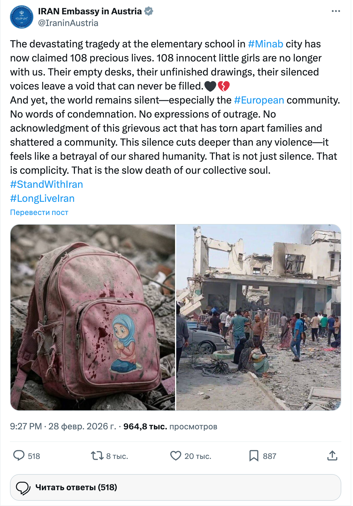
Фото мгновенно разлетелось. Al Jazeera English опубликовала материал, возложив ответственность на Израиль — 80 тысяч просмотров. Западные СМИ подхватили: The Telegraph привёл цифры жертв со ссылкой на иранские источники.
Исследователи проверили изображение рюкзака через детектор SynthID. Результат: в метаданных обнаружен скрытый водяной знак Google Gemini. Фотография сгенерирована искусственным интеллектом. Официальное посольство суверенного государства распространяло ИИ-фейк в качестве доказательства. (Tal Hagin / разоблачение, HonestReporting)
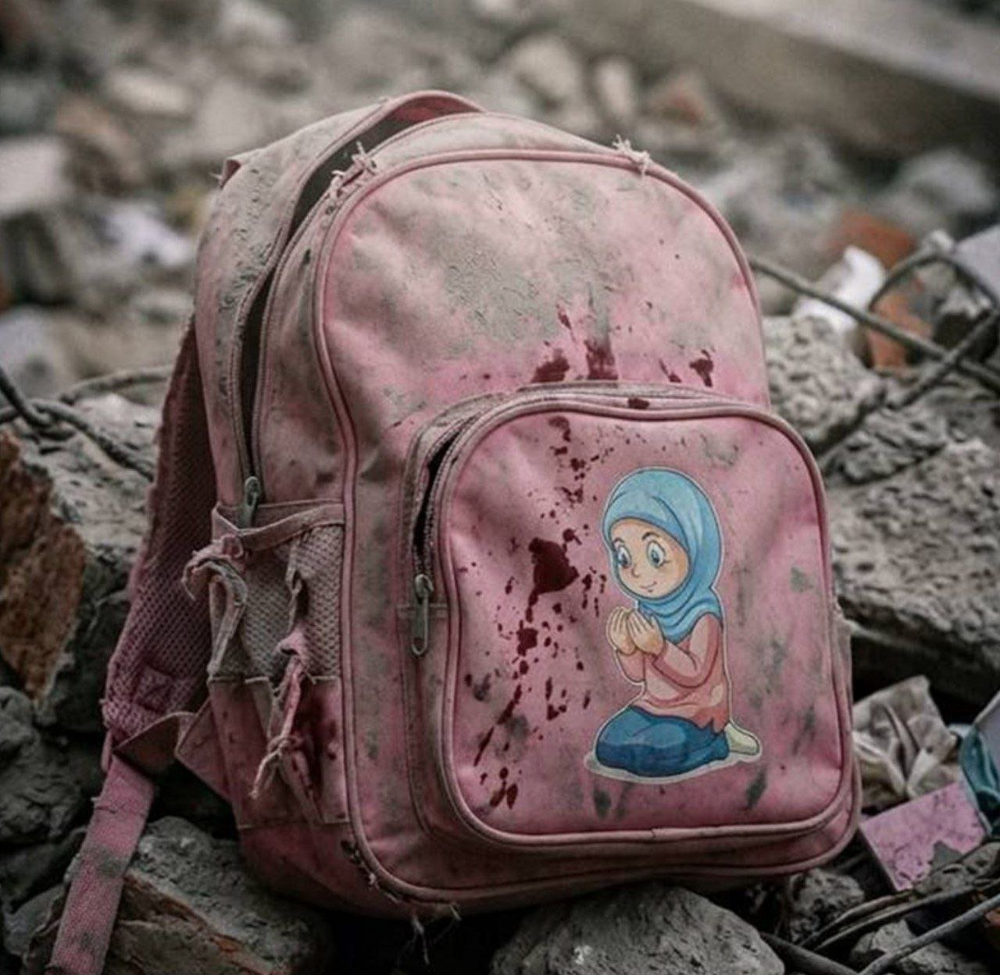
Депутат британского парламента Крис Хаззард (Sinn Féin) опубликовал в X другое ИИ-сгенерированное изображение «массовых похорон» с подписью «This image should be the front page of every news outlet» («Это фото должно быть на первой полосе каждого СМИ») — 242 тысячи просмотров, 7 тысяч репостов. Детектор Hive Moderation оценил изображение как 100% сгенерированное ИИ. (BOOM)
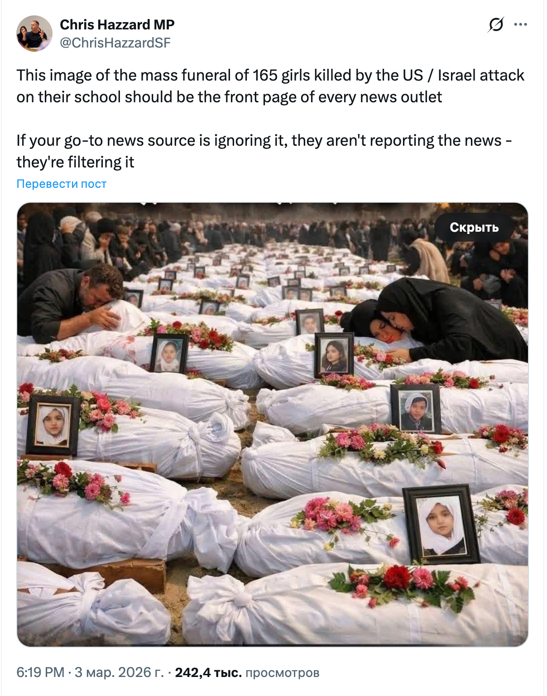
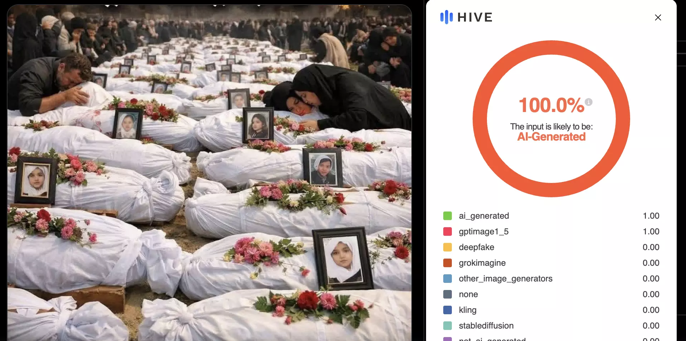
Вопрос, который стоит задать: зачем режим фабрикует доказательства трагедии, если трагедия реальна? Настоящие фотографии 168 погибших детей не нуждаются в обработке через Google Gemini. Фальсификации не усиливают правду — они сигнализируют о том, что реальная картина не совпадает с заявленной.
Фабрикация жертв: это не первый раз
Минаб — не первый случай, когда заявленные цифры жертв при проверке оказываются многократно завышены. Существует документированная закономерность.
Протесты 2025–2026, Иран
Крупнейшая бойня в истории Исламской Республики — и самый свежий пример того, как режим обращается с цифрами. Протесты начались 28 декабря 2025 на фоне экономического коллапса. К 8 января 2026 они охватили 675 точек в 210 городах всех 31 провинций Ирана.
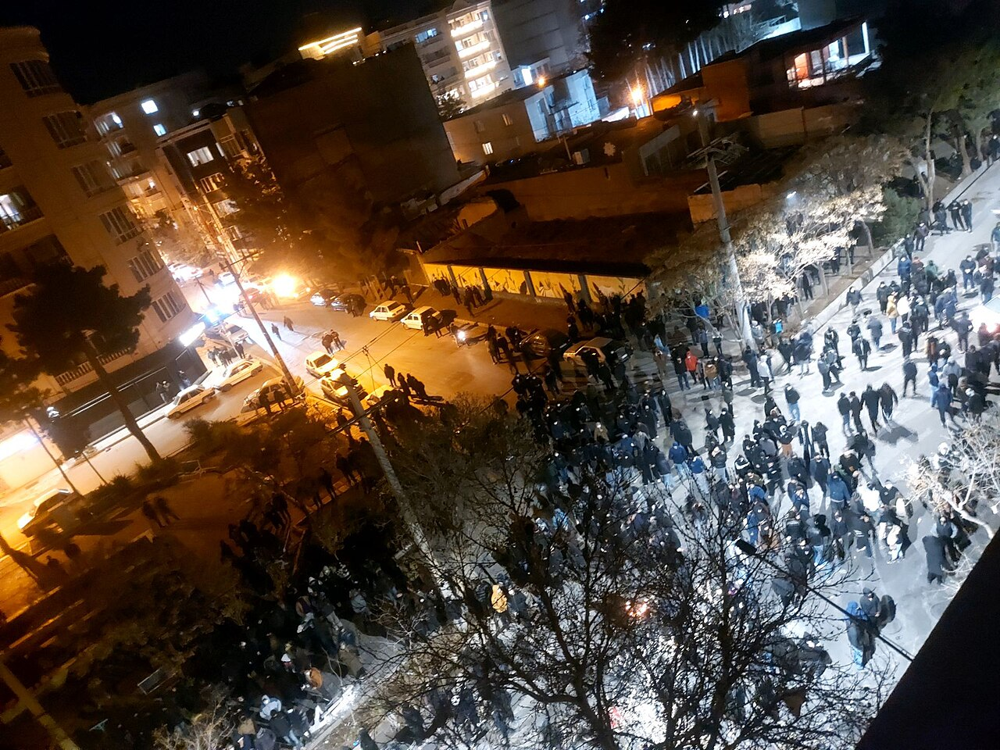
8 января режим ввёл тотальный блэкаут интернета — по модели ноября 2019. Именно под блэкаутом произошли основные убийства. Иранское правительство заявило о 3 117 погибших. Независимая организация HRANA верифицировала более 7 000 смертей с именами и обстоятельствами. Утечки из разведки КСИР, опубликованные Iran International, называют цифру 36 500. Time и The Guardian, ссылаясь на сеть из 80+ медиков внутри страны, оценили число погибших только за 8–9 января в около 30 000. Хаменеи сам признал «несколько тысяч», назвав всех протестующих «бунтовщиками и террористами».
Разброс цифр — от 3 117 (правительство) до 36 500 (утечки из КСИР) — в 12 раз. Ни одного независимого международного расследования допущено не было. Спецдокладчик ООН заявил, что число жертв «может превысить 20 000», и призвал расследовать возможные преступления против человечности. (Wikipedia, 2026 Iran massacres)
Это тот самый режим, который теперь просит мир поверить его цифрам о школе в Минабе.
Больница Аль-Ахли, Газа, октябрь 2023
ХАМАС немедленно заявил: израильская авиабомба уничтожила госпиталь, 471 погибший. Мировые СМИ — включая New York Times — вынесли цифру в заголовки. Последующее расследование (американская разведка, французская разведка, независимые аналитики) установило: удар нанесла упавшая ракета «Исламского джихада», а не израильская бомба; здание госпиталя не было разрушено — пострадала парковка; реальное число погибших — от 100 до 200 человек, а не 471. Ни ХАМАС, ни Иран ответственность не признали и цифру так и не скорректировали. (Wikipedia, BBC Verify)
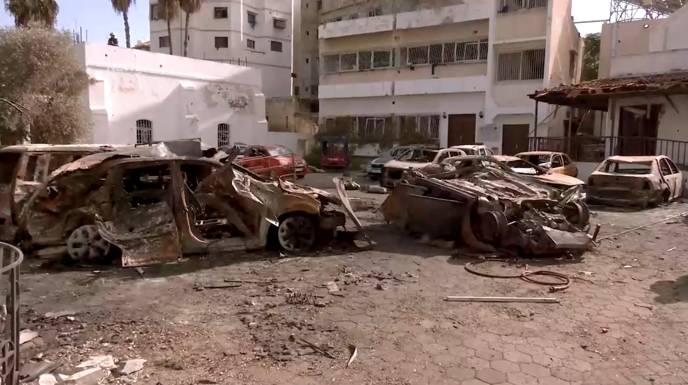
Дженин, апрель 2002
Палестинские источники и арабские СМИ заявили о «массовой резне» — до 500 убитых мирных жителей. Термин «геноцид» использовался повсеместно. Комиссия ООН, расследовавшая инцидент, установила: погибли 52 палестинца, из них большинство — вооружённые боевики. Израиль потерял 23 солдат — именно потому, что вёл бой пехотой в городской застройке вместо авиаударов, стараясь минимизировать потери среди гражданских. (Wikipedia, Human Rights Watch)
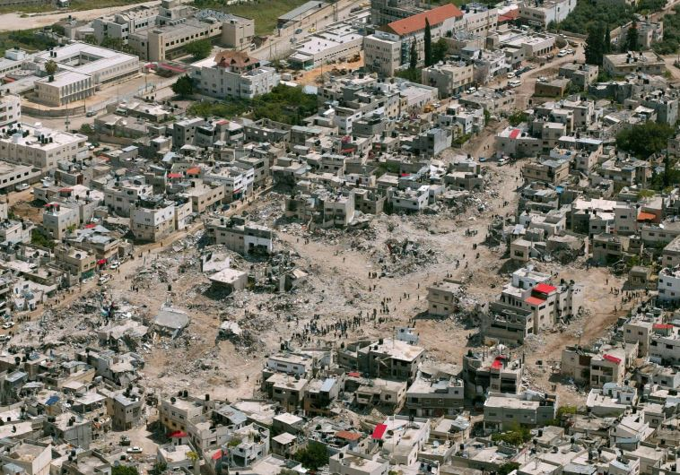
Рейс PS752, январь 2020
КСИР сбил украинский пассажирский самолёт — 176 погибших. Иранский режим три дня категорически отрицал свою причастность, обвиняя «техническую неисправность». Бульдозеры начали расчищать место крушения до прибытия международных следователей. Признание последовало только после того, как Канада, Украина и Bellingcat опубликовали неопровержимые доказательства — видеозаписи пуска ракеты и фрагменты боеголовки ЗРК «Тор-М1». (Wikipedia, Bellingcat)
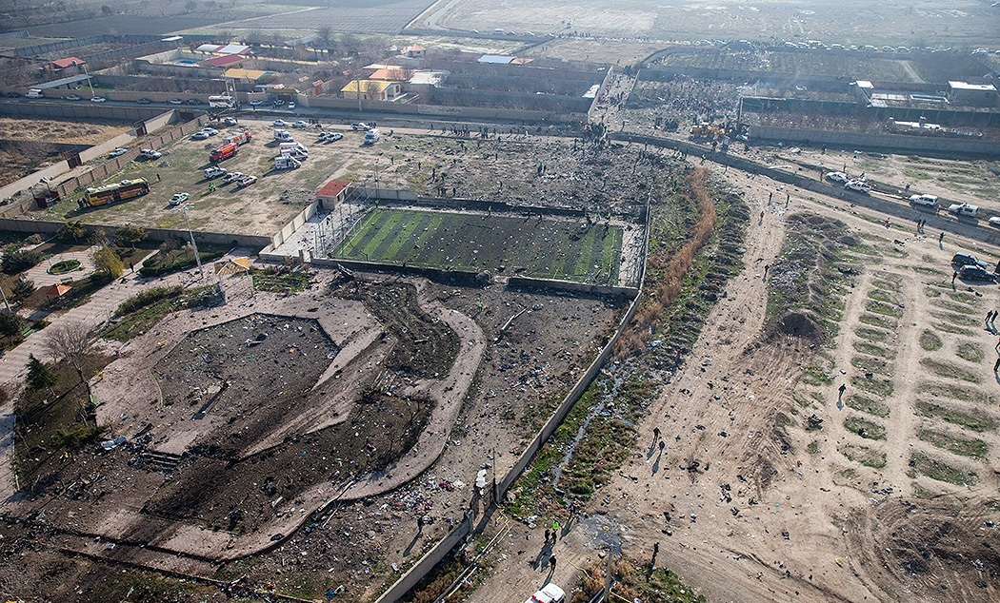
Мухаммад аль-Дура, сентябрь 2000
Самый знаменитый кадр Второй интифады: 12-летний мальчик, якобы убитый израильскими солдатами на глазах у камеры France 2. Кадр стал иконой — почтовые марки, граффити, призывы к джихаду. Проблема в том, что последние секунды записи, где «убитый» мальчик поднимает руку от лица, были вырезаны. Израильское правительственное расследование (доклад Купервассера, 2013) заключило: «не только Мухаммад не был поражён огнём ЦАХАЛа — возможно, он вообще не был убит». Баллистический анализ показал, что израильская позиция находилась под таким углом, при котором пули не могли оставить отверстия в стене за мальчиком. Оператор заявлял о 27 минутах съёмки — в суде предъявили только 18. Французский апелляционный суд в 2008 году оправдал журналиста Филиппа Карсенти, назвавшего кадры «медиа-мистификацией», признав, что у него были «достаточные основания» для такого утверждения. (Wikipedia, The Atlantic)
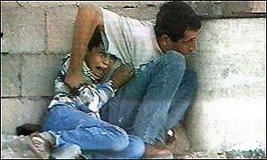
Кана, Ливан, июль 2006
Ливанские источники заявили: израильский удар убил 54 человека, из них 37 детей. Ливанский Красный Крест и Human Rights Watch позже установили реальное число — 28 погибших, 16 детей. Почти вдвое меньше. Но ещё показательнее оказалось то, что произошло после: начальник гражданской обороны Южного Ливана Салам Дахер — впоследствии известный как «Зелёный Шлем» — был многократно сфотографирован с одним и тем же телом мёртвого ребёнка в разных позах, в разных местах, для разных съёмочных групп. Уточним: ребёнок действительно погиб — тело реальное. Но Дахер использовал его как реквизит: доставал, менял позу, переносил, давал снять другой съёмочной группе. Это не фейковая жертва — это постановочная съёмка с реальным трупом ребёнка для максимального медиа-эффекта. Что, пожалуй, ещё хуже. (Wikipedia, HRW)
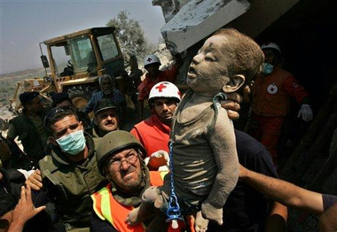
Иран и давка в Мине, сентябрь 2015
Давка на хадже унесла жизни более 2 000 паломников — крупнейшая трагедия в истории хаджа. Независимые подсчёты: 2 411 (AP), 2 236 (AFP), 2 070 (Reuters). Саудовская Аравия официально заявила 769. Иран раздул цифру до 4 173 — взяв число с веб-страницы замминистра здравоохранения Саудовской Аравии, удалённой через три часа после публикации и дезавуированной как ошибочной. Fars News даже опубликовал видеоинструкцию по доступу к кешированной странице. Отдельно Иран заявил, что пропавший посол Рокнабади был «похищен Саудовской Аравией» — тело впоследствии идентифицировали его собственные братья по ДНК. (Wikipedia)
Мекка, июль 1987
Столкновение иранских паломников с саудовскими силовиками. Иранское агентство IRNA заявило: 400 убитых иранцев, «несколько тысяч» раненых. Реальные цифры: 402 погибших всего (275 иранцев, 85 саудовцев, 42 из других стран), 649 раненых — не «несколько тысяч». Иран подал инцидент как неспровоцированную резню мирных паломников. По данным американской разведки и исследователя Мартина Крамера — столкновение было взаимным: иранские паломники пытались прорваться через оцепление, насилие шло с обеих сторон. Хомейни призвал к свержению саудовской монархии; миллион иранцев вышел на «день ненависти» в Тегеране. (Wikipedia)
«Красный Крест под бомбами», Ливан, июль 2006
AP сообщил: «Израильские истребители расстреляли ракетами две машины скорой помощи Красного Креста». Фотографии облетели мир. Детальный анализ показал: повреждения машин несовместимы с ракетным ударом — металл проржавел (невозможно от свежего взрыва), а «входное отверстие» в крыше точно совпадало со штатным вентиляционным люком, имеющимся на всех машинах этой модели. Даже Human Rights Watch впоследствии признала, что первоначальный вывод о ракетном ударе «был некорректен». (Wikipedia, Zombietime — полный анализ)
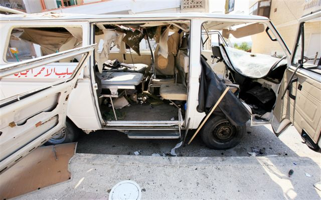
Закономерность одна и та же: громкое заявление → мгновенное тиражирование → запоздалая проверка → реальность радикально отличается от первоначальных цифр. Эта машина работает десятилетиями. Минаб — её последний продукт.
Предварительные выводы
Реальность сложнее, чем простой «фейк». Школа существовала. Дети, вероятно, в ней были — удар пришёлся на субботу, первый рабочий день в Иране, около 10:45 утра. Удар наносился по военному объекту КСИР — штабу ракетной Бригады Асеф ВМС КСИР. Школа стояла вплотную к периметру базы, в 600 метрах от штаба.
Что при этом достоверно установлено:
- Полное официальное название школы — «Shajareh Tayyebeh IRGC Navy Girls' School». Школа принадлежала Корпусу стражей, по данным антирежимных иранских СМИ — предназначалась для детей военнослужащих
- До 2016 года школа находилась внутри периметра базы КСИР; затем её отделили стеной, но она осталась вплотную к военным объектам
- Цель удара — штаб ракетной Бригады Асеф ВМС КСИР, а не школа. По данным Reuters, американские следователи склоняются к выводу, что удар нанесли силы США
- Иранское посольство в Австрии распространило ИИ-сгенерированный фейк (рюкзак) с детектируемым Gemini-водяным знаком — 965 тысяч просмотров
- КСИР и Басидж систематически используют школьные здания как базы — до 54 000 баз Басидж в школах по всему Ирану, практика с 1980-х годов
- Медиа повторяли иранские государственные заявления без верификации — цикл «обвинение → вирусный охват → запоздалая проверка» сработал образцово
- Все предыдущие случаи (Аль-Ахли, Дженин, Кана, рейс PS752) при проверке показали: первоначальные цифры завышены, реальная картина радикально отличается от заявленной
- Иран ни разу за всю историю не допустил независимого расследования инцидента с гражданскими жертвами
Что по-прежнему не подтверждено независимо:
- Точное число жертв (165–180 по иранским данным) — единственный источник цифр — государственное ТВ. The Telegraph сообщил о 165 жертвах, из них только 81 — ученицы. Кто остальные 84 — неизвестно
- Полный список погибших — иранские СМИ опубликовали рукописный список 56 имён, BBC Verify смогла перепроверить лишь 3 из них. Судебные власти заявили об опознании 140 тел — но это данные иранских чиновников
- Ни одна международная организация — ООН, МККК, ВОЗ — не провела собственного расследования
- Ни один иностранный журналист не был допущен на место
Режим, который размещает военные штабы рядом со школами, десятилетиями использует школы как базы ополчения, систематически завышает цифры потерь, блокирует независимые расследования, а потом усиливает реальную трагедию ИИ-фабрикатами — заслуживает не сочувствия, а холодного, документированного анализа.
Информационная война: и дальше будет хуже
Параллельно с горячей войной идёт полномасштабная информационная война. И здесь ситуация будет только ухудшаться. Никого из нас в школе не учили правилам информационной гигиены — а это становится жизненной необходимостью.
Чтобы противостоять этому, нужно задействовать то, что у людей было всегда и что никакой искусственный интеллект не заменит — репутацию источника.
Прежде чем воспринимать информацию, доверять ей и тем более распространять её — посмотрите, откуда она пришла.
Люди, которые повторяют тезисы лживой пропаганды, — не жертвы. Они сообщники. Не будьте сообщниками.
Заключение
Включайте голову. Не поднимайте с пола информационный мусор — и тем более не разносите его дальше. Заведомая дезинформация не становится правдой от количества репостов.
Репутация источника — это не устаревшая категория. Это единственный инструмент, который работает против фабрики фейков.
Источники
- 2026 Minab school airstrike — Wikipedia
- Iran holds mass funeral — Al Jazeera
- Photo shows graves of Iranian girls — Snopes
- Image of mourning is fake — Snopes
- «Iran Says School Massacre» and the Media Repeats — HonestReporting
- The Missing Images — HonestReporting
- US probe said to indicate American forces likely launched strike — Reuters / Times of Israel
- AI-Generated Images Falsely Linked to Iran Conflict — BOOM
- Teachers' Union Warns of Security Presence in Iranian Schools — IranWire
- Iran holds press conference at school — IranIntl
- Be Careful About Blaming the US or Israel for Killing Iranian Schoolgirls — AEI
- Геолокационный анализ — Ashkan Khatibi на X
- Iran Military Weaponizes Schools — RightWingHeadlines
- What we know about the strike — CBS News
- Death toll rises — NBC News
- Al-Ahli Arab Hospital explosion — Wikipedia
- Gaza hospital blast: What video, pictures and other evidence tell us — BBC Verify
- Battle of Jenin (2002) — Wikipedia
- Jenin: IDF Military Operations — Human Rights Watch
- Ukraine International Airlines Flight 752 — Wikipedia
- Video Showing Flight PS752 Missile Strike Geolocated — Bellingcat
- Rockets found in UNRWA school, for third time — Times of Israel
- Iran holds funeral for girls killed in school strike — BBC
- Killing of Muhammad al-Durrah — Wikipedia
- Who Shot Mohammed al-Dura? — The Atlantic
- 2006 Qana airstrike — Wikipedia
- Why They Died: Civilian Casualties in Lebanon — HRW
- 2006 Lebanon War photographs controversies — Wikipedia
- Reuters admits altering Beirut photo — Ynetnews
- The Red Cross Ambulance Incident — Zombietime
- Fact Check: Video Does NOT Show US Aircraft Carrier Lincoln Burning — Lead Stories
- USS Abraham Lincoln fire missile Iran — PolitiFact
- CENTCOM: «The Lincoln was not hit» — CENTCOM / X
- Iran girls' school airstrike — BBC Verify
- Iran girls' school airstrike aftermath — Financial Times
- AI-generated backpack debunked (SynthID / Gemini watermark) — Tal Hagin / OSINT
- How a Regime Claim Became a Viral Headline — Algemeiner
- Марк Солонин — видео-выступление (YouTube)